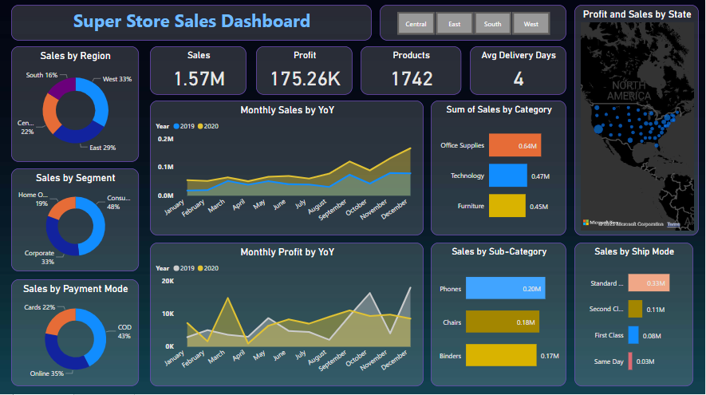
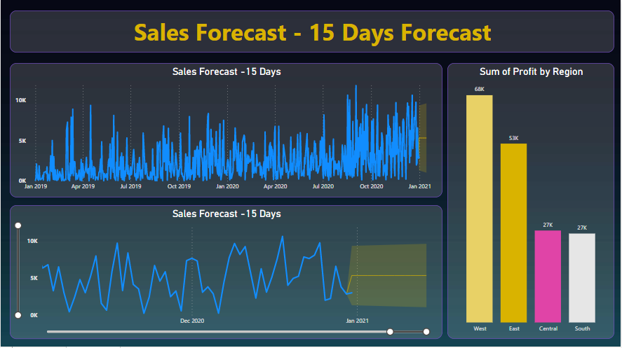

Power BI Project - Superstore Dataset
Welcome to my Power BI project based on the Superstore dataset!


Dashboard: Sales Analysis
Sales Analysis
The Sales Analysis dashboard provides key insights into revenue, product performance, and regional sales trends. It helps answer questions like:
- Which product categories gives maximum sales/profit?
- What is the monthly profit trend?
- How do sales vary across different regions?
- What will be the sales forecast for next 15 days?
Here, I have showcased a key dashboard from my Power BI project. The dashboard is accompanied by its respective image and a brief description highlighting the questions that can be answered using the dashboard.